Week 10 Lecture Notes
Spatial Audio & Haptics
- Hearing covers 360° against a headset’s roughly 100° view, so audio directs attention, confirms physical events and delivers presence cheaply, yet it is usually added last.
- The brain locates sound from interaural time and level differences plus pinna cues, which HRTF-based binaural rendering with head tracking recreates over headphones.
- In Unity, use a spatialiser with mono, fully 3D sources, tune attenuation curves by ear, and match reverb to the space the user can see.
- Make each sound deliberately diegetic or non-diegetic: non-diegetic sound has a presence cost, and many UI sounds can simply be played from the object instead.
- Design haptics from physical causes using amplitude, frequency and duration, distinguishing event from continuous haptics rather than using one identical buzz for everything.
- Presence is multi-modal: trigger visual, audio and haptic feedback from the same event in the same frame, and agreeing cues can create pseudo-haptic weight and texture.
1 Overview
Duration: 1 hour
Audio delivers more presence per unit of development effort than any visual technique available on this hardware, and it is routinely the last thing added. This session treats sound and touch as primary design materials rather than polish.
2 Learning Objectives
By the end of this lecture, students will be able to:
- Explain how humans locate sounds, and how a spatialiser recreates those cues over headphones
- Specify a spatial audio setup appropriate to a scene’s geometry
- Decide whether each sound should be diegetic or non-diegetic
- Design a haptic response that reads as a physical event rather than a buzz
- Explain how sensory modalities reinforce one another to sustain presence, and where cross-modal illusions break
3 1. Why Audio Matters
A headset shows roughly 100° of the world; hearing covers all 360°. That one difference makes audio uniquely useful in XR:
- It directs attention. In a medium without a camera (Week 9), sound is the most reliable way to make a user turn towards something outside their view.
- It works where vision cannot: behind the user, through walls, in the dark.
- It confirms physical events. The sound of an object landing tells the user it has weight and what it is made of, even when the visuals are simple.
- It is cheap. A well-placed spatialised sound often does more for presence than visual detail that costs far more to make and to render.
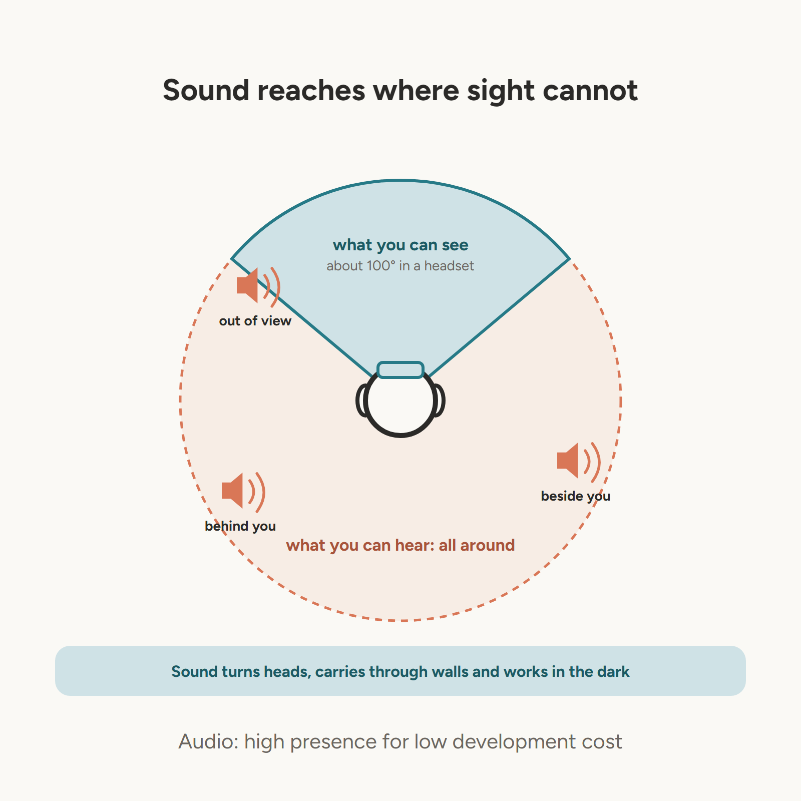
Despite this, audio is usually the last thing added to an XR project, often as stereo music and a handful of non-spatialised effects. This session argues for designing it from the start.
4 2. How Spatial Audio Works
4.1 2.1 How We Locate Sounds
The brain works out where a sound comes from using three main cues:
- Interaural time difference (ITD): a sound from one side reaches the nearer ear slightly before the far ear, by up to a fraction of a millisecond. ITD is most useful for low frequencies.
- Interaural level difference (ILD): the head casts an acoustic shadow, so the far ear hears the sound more quietly, especially at high frequencies.
- Spectral (pinna) cues: the folds of the outer ear filter sound differently depending on whether it comes from above, below, in front or behind. These cues resolve elevation, and the front–back confusion that ITD and ILD alone cannot (Blauert, 1997).
Moving the head helps too: small head turns change all three cues, and the brain uses the change to pin the source down. This is why head tracking makes headphone audio far more convincing.
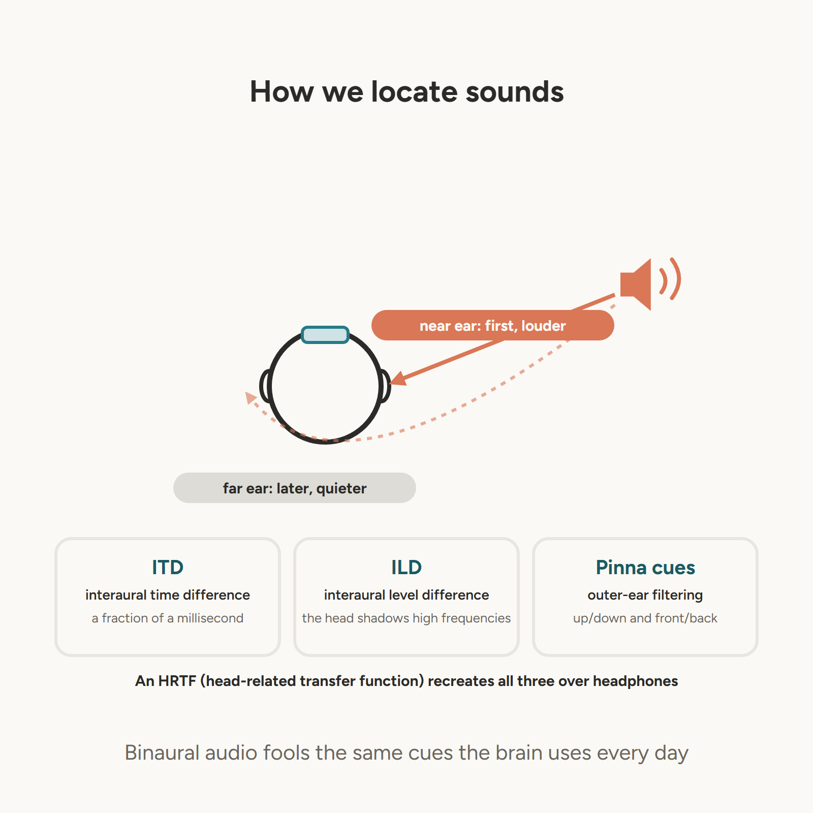
4.2 2.2 HRTFs and Binaural Rendering
A head-related transfer function (HRTF) describes how a sound from a given direction is changed by the head, torso and ears before it reaches each eardrum. Applying the right HRTF to a mono sound, separately for each ear, produces binaural audio that recreates ITD, ILD and spectral cues over headphones (Begault, 1994). With head tracking updating the direction every frame, a sound can be placed convincingly behind or above the listener.
Most systems use a generic HRTF measured on a typical head. It works well for most people, but because ears differ, some listeners experience front–back confusion or sounds that seem to come from inside the head. Personalised HRTFs reduce this but are not yet common in consumer headsets.
5 3. Spatialisers, Attenuation and Reverb
5.1 3.1 Spatialisers in Unity
A spatialiser plugin renders each audio source binaurally from its position relative to the listener’s head, every frame.
| Setting | Value | Why |
|---|---|---|
| Audio Source › Spatial Blend | 1 (fully 3D) | 0 is 2D stereo that ignores position |
| Audio Source › Spatialize | On | Routes the source through the spatialiser plugin |
| Project Settings › Audio › Spatializer Plugin | e.g. Meta XR Audio | Unity’s default panning is not binaural |
| Audio clip | Mono | A stereo clip cannot be placed at a single point |
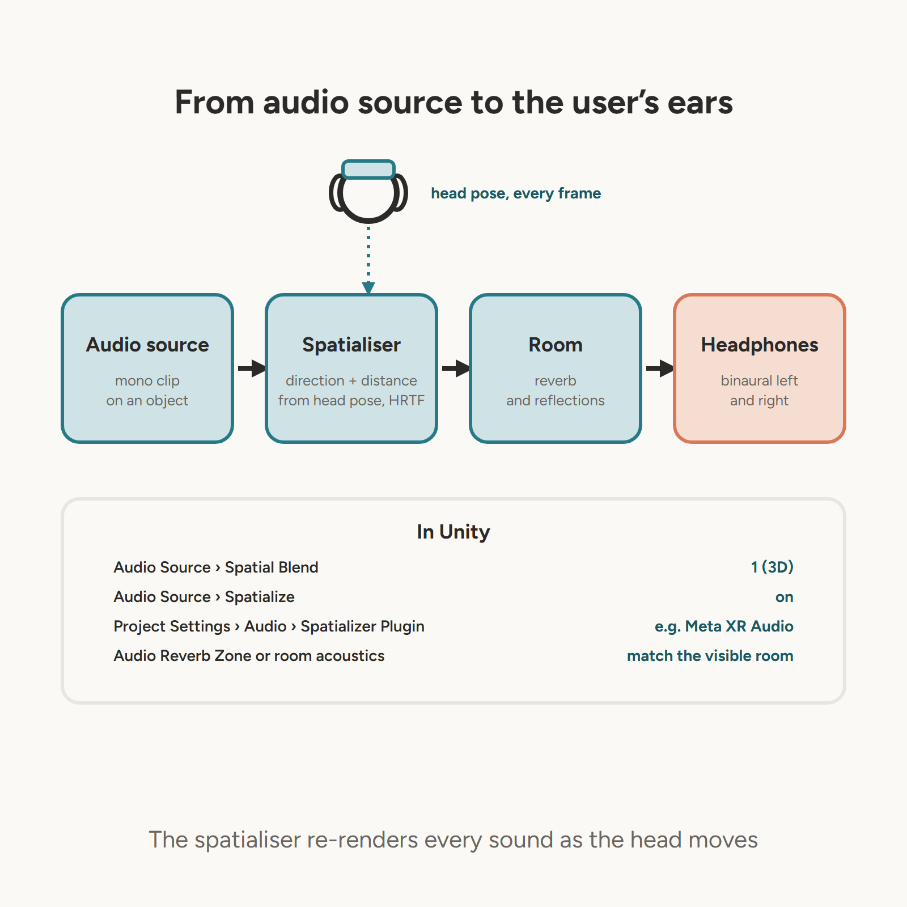
5.2 3.2 Attenuation Curves
The attenuation curve sets how volume falls with distance. It is one of the strongest cues to how far away a sound is.
- Logarithmic rolloff approximates real-world behaviour but falls off quickly: sounds can become inaudible sooner than designers expect.
- Linear rolloff is predictable and suits gameplay cues that must be heard across a space.
- Custom curves let you keep an important sound audible where the user will actually be, while still giving a sense of distance.
- Min distance is the radius inside which the sound plays at full volume; max distance is where attenuation stops.
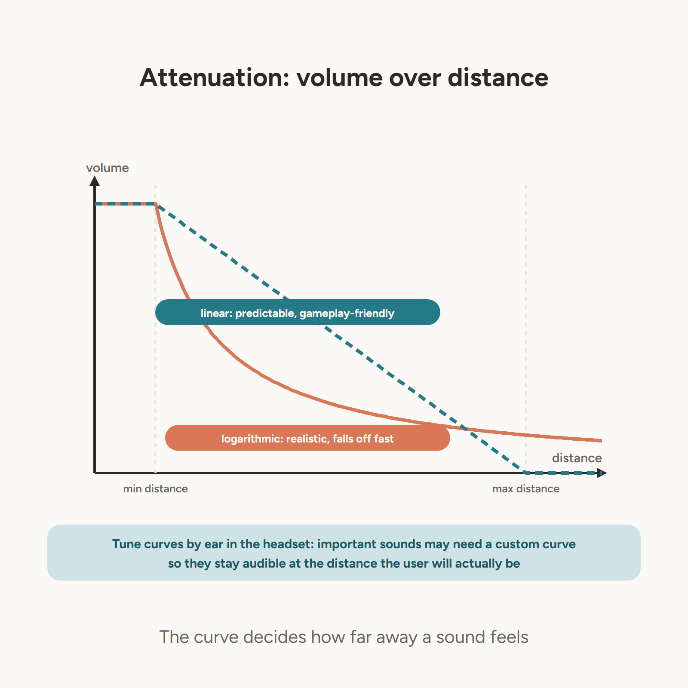
The perceptual consequence of a wrong curve is subtle but real: a sound that is too loud for its visual distance seems to come from somewhere closer than the object, and the two stop feeling like one thing. Tune curves by ear, in the headset.
5.3 3.3 Reverb and Acoustic Space
Reverb tells the ear how large a space is and what its surfaces are made of. A small tiled room produces short, bright reflections; a large hall produces a long, rich decay; outdoors there is almost none.
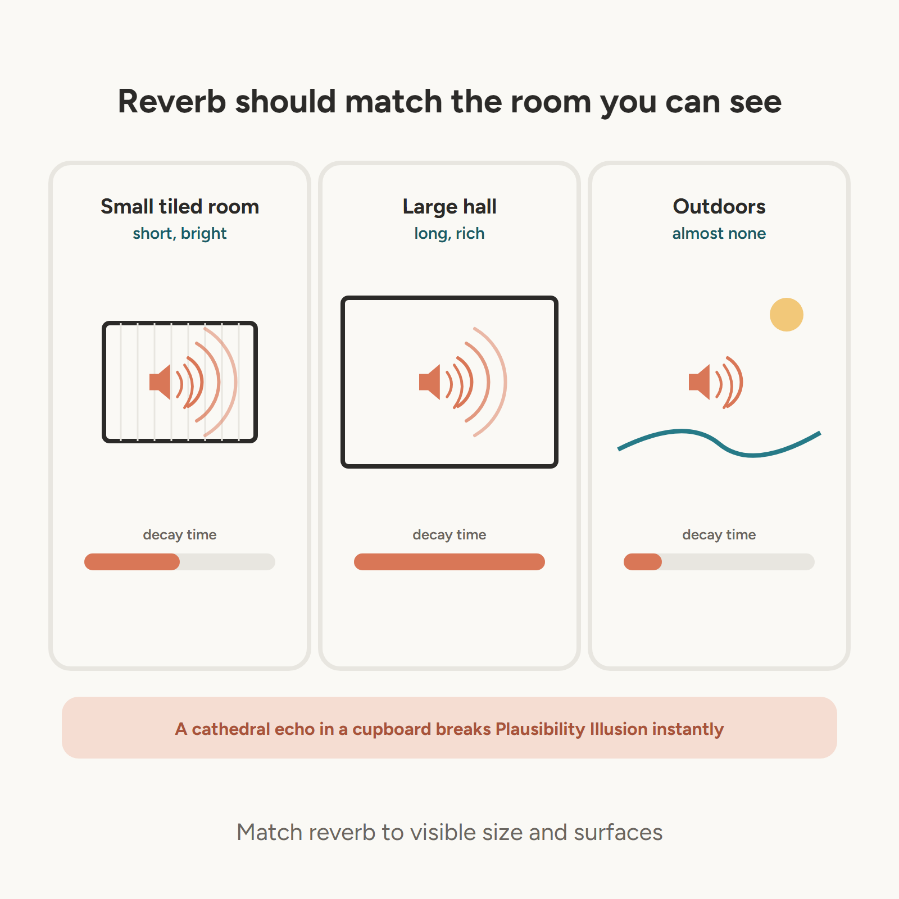
The rule is to match reverb to what the user can see. A cathedral echo in a cupboard, or a dry studio sound in a cave, breaks Plausibility Illusion immediately (Week 6). In Unity, an Audio Reverb Zone applies a preset to sources inside a region; spatialiser SDKs such as Meta XR Audio can also model room acoustics from simple room geometry. In passthrough mixed reality, real sounds already carry the real room’s acoustics, so virtual sounds should be matched to the real room as well.
6 4. Diegetic and Non-Diegetic Sound
The distinction mirrors diegetic UI from Week 5:
| Diegetic | Non-diegetic | |
|---|---|---|
| Source | Exists in the world | No source in the world |
| Examples | A radio, footsteps, a door creaking | Music score, narrator, UI beeps |
| Rendering | Spatialised, attached to its object | Head-locked stereo |
| Effect on presence | Strengthens it | Can remind the user they are in a simulation |
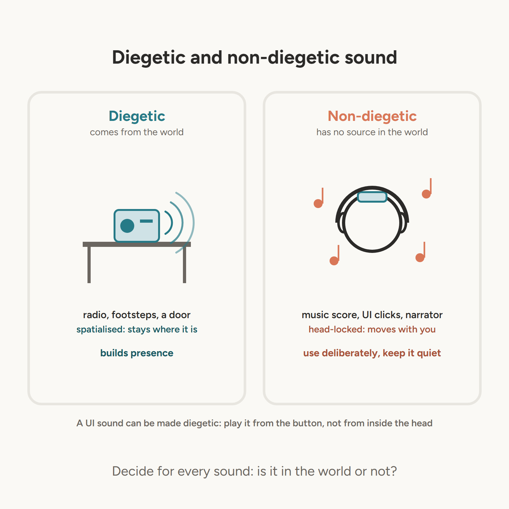
Non-diegetic sound is not wrong: a score can carry emotion, and a narrator can guide a first-time user. But it has a presence cost, so use it deliberately and keep it in the background. Many UI sounds can be made diegetic simply by playing them from the object (the button, the panel, the wrist menu) rather than from inside the user’s head.
7 5. Haptic Design
7.1 5.1 A Vocabulary for Haptics
Standalone headset controllers produce vibration with a small number of parameters:
- Amplitude: how strong the vibration is
- Frequency: how fast it vibrates (how much control you have over this depends on the device and API)
- Duration: how long it lasts
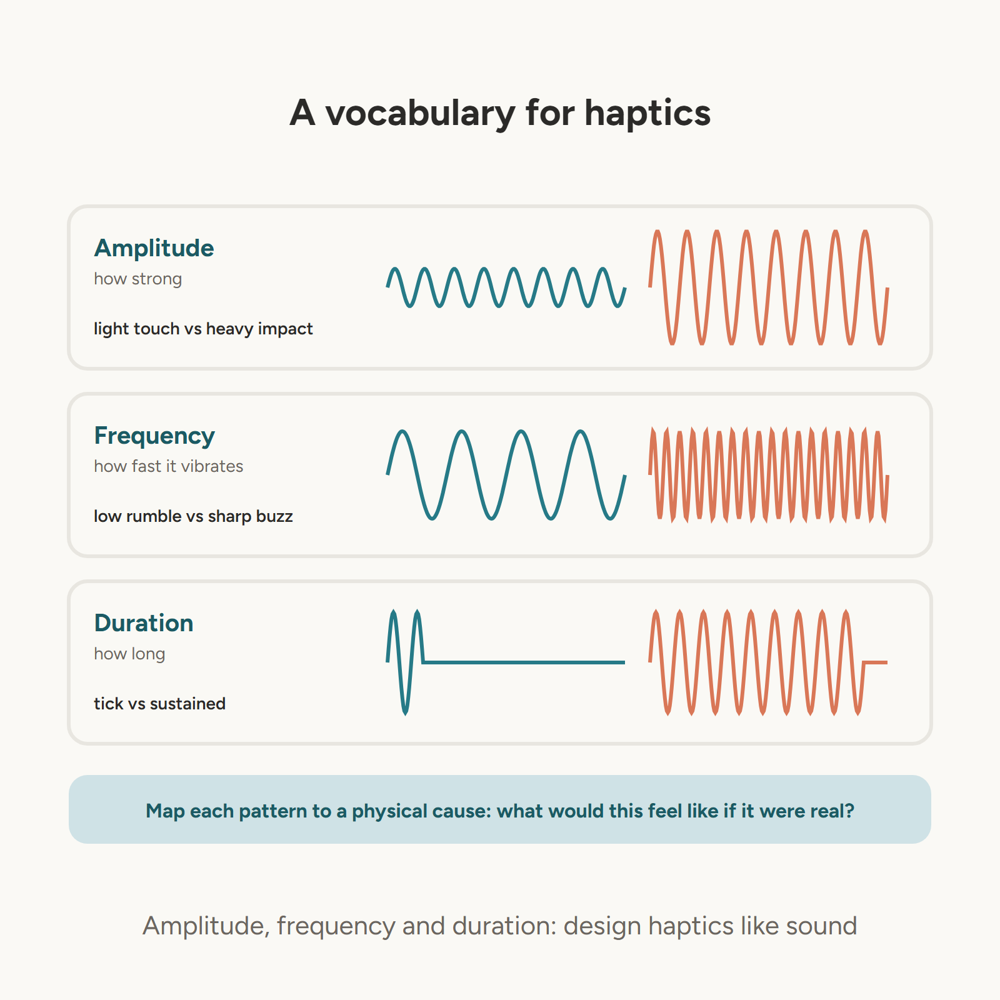
Treat these like sound design. Start from the physical cause: what would this contact feel like if it were real? A light tap is short and weak; a heavy impact is short and strong; dragging across a rough surface is a low, continuous vibration that changes with speed. A single identical buzz for every event conveys only “something happened”, and users quickly learn to ignore it.
7.2 5.2 Event and Continuous Haptics
- Event haptics mark a moment: hovering over something, grabbing it, a button clicking, an impact. They are short and crisp.
- Continuous haptics convey an ongoing state: holding, dragging, a motor running. They are usually low in amplitude and modulated by speed, force or contact.
| State | Haptic | Type |
|---|---|---|
| Hover | Tiny tick | Event |
| Select / grab | Firm click | Event |
| Hold and move | Low vibration that follows speed or contact | Continuous |
| Release | Soft pulse | Event |
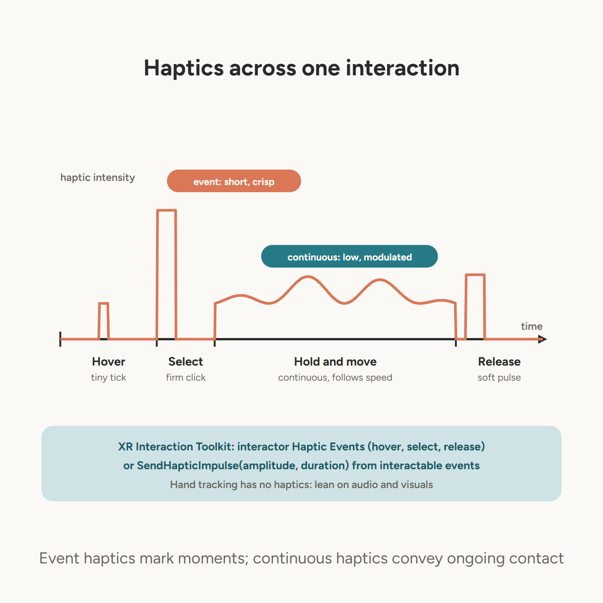
In Unity’s XR Interaction Toolkit (2.x), the controller interactors have Haptic Events settings in the Inspector for hover and select, so simple event haptics need no code. For more control, call SendHapticImpulse(amplitude, duration) on the controller from interactable events. Save strong vibrations for moments that matter: a constant strong rumble is tiring, and it masks the events you want the user to notice.
Hand tracking has no haptics. Hand-tracked interactions have to rely more heavily on audio and visual feedback, which is one reason the Week 4 feedback triad (visual, audio, haptic) matters.
8 6. Multi-Modal Feedback and Cross-Modal Illusions
8.1 6.1 Synchronised Feedback
The brain fuses visual, auditory and tactile signals into a single event when they arrive close together in time, within a few tens of milliseconds. When they arrive further apart, the same three cues are perceived as separate events, and the contact feels fake.
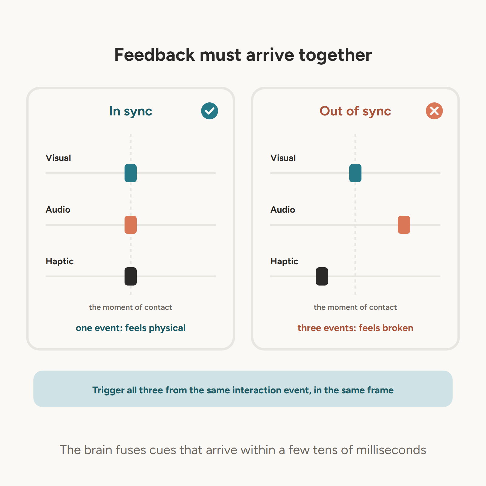
Practical rules:
- Trigger visual, audio and haptic feedback from the same interaction event, in the same frame.
- Trim audio clips so the sound starts on the first sample: silence at the start of a clip is latency you added yourself.
- Test on the device: timing in the editor is not timing on the headset.
8.2 6.2 Pseudo-Haptics
A controller can vibrate, but it cannot push back. Pseudo-haptic techniques use vision and sound to imply forces the hardware cannot apply (Lécuyer, 2009):
- Weight: if a heavy virtual object moves slightly less than the hand that holds it, so that it lags behind (a control/display ratio below 1), users perceive it as heavier. Rietzler et al. (2018) showed that users accept a visible offset between real and virtual hand in exchange for a sense of weight.
- Texture: small vibrations and sounds that follow movement across a surface suggest roughness.
- Impact and material: a sharp sound and a strong, short pulse at contact suggest a hard, heavy collision; a soft sound and a weak pulse suggest something light.
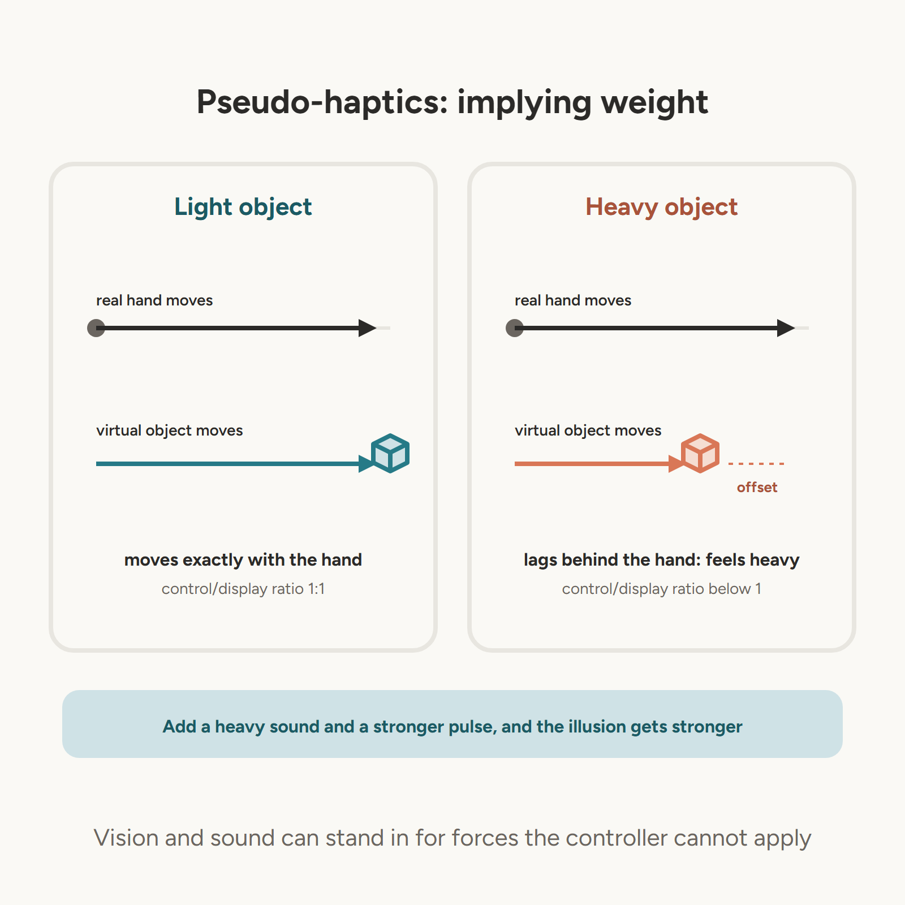
Each cue makes the others more convincing: a lagging object with a heavy sound and a stronger pulse reads as heavier than any one cue alone.
8.3 6.3 Where the Illusion Breaks
Cross-modal illusions hold only while the cues agree with each other and with what the user sees:
| Problem | Why it breaks | Instead |
|---|---|---|
| Hand passes through a wall | Vision says “solid”, the hand says “nothing there” | Stop the virtual hand at the surface, with a buzz on contact |
| Sound does not match the material | A glass object that thuds like wood | Match the sound to what the object looks like |
| Haptic with no visible cause | The user cannot tell what happened | Always show what caused it |
| The same buzz for everything | Conveys only “something happened” | Vary by event, weight and material |
| Late audio or haptic | Cues perceived as separate events | One event, same frame |
| Constant strong rumble | Tiring, masks important events | Save strength for moments that matter |
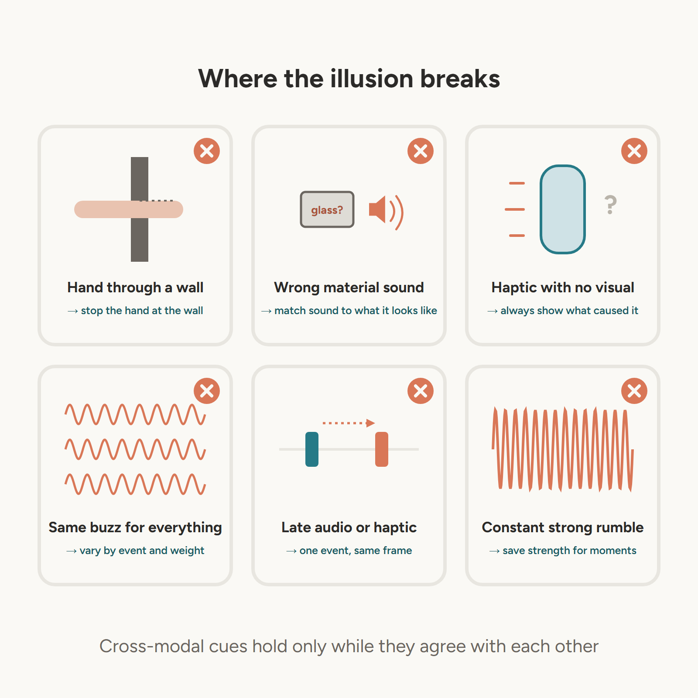
Stopping the virtual hand at a wall while the real hand carries on is itself a deliberate mismatch, and it works because users prefer a hand that respects the world to one that passes through it. As with pseudo-haptic weight, the offset must stay small, and the hand should snap back smoothly when the real hand withdraws.
9 7. Accessibility
Audio and haptics are also accessibility tools, and they need accessible alternatives:
- Deaf and hard-of-hearing users need important sounds mirrored visually: captions placed near the source (Week 13 covers captions in 3D), direction indicators for off-screen sounds, and haptic cues.
- Users with low vision benefit from rich spatial audio and haptics that confirm what they cannot easily see.
- Provide separate volume controls for music, effects and speech, and a way to reduce or turn off haptics.
10 Summary
Presence is multi-modal. A convincing interaction is usually a visual event, a spatialised sound and a haptic response arriving together within a few tens of milliseconds – and the sound is doing more of the work than most developers expect. Spatialisers recreate the cues the brain uses to locate sound; attenuation and reverb must match what the user sees; each sound should be deliberately diegetic or not; haptics are a vocabulary to be designed from physical causes; and cross-modal illusions can imply weight and texture the hardware cannot produce, as long as every cue agrees.
11 Self-Check Questions
- Name the three cues the brain uses to locate a sound. Which one resolves front–back confusion?
- Why must a spatialised source use a mono audio clip?
- A sound attached to a distant object seems to come from somewhere nearer. What setting would you check first?
- Give one example each of diegetic and non-diegetic sound in an XR experience you have used. Could the non-diegetic one have been made diegetic?
- Design the haptic feedback for picking up, shaking and dropping a heavy glass bottle. Specify amplitude, duration and whether each is event or continuous.
- Why do visual, audio and haptic feedback need to be triggered from the same event?
- Explain how a control/display ratio below 1 can make an object feel heavy, and what could go wrong if the ratio is too low.
12 References
- Begault, D.R. (1994) 3-D Sound for Virtual Reality and Multimedia. Academic Press.
- Blauert, J. (1997) Spatial Hearing: The Psychophysics of Human Sound Localization (revised ed.). MIT Press.
- Jerald, J. (2015) The VR Book: Human-Centered Design for Virtual Reality. ACM Books / Morgan & Claypool.
- Lécuyer, A. (2009) “Simulating haptic feedback using vision: a survey of research and applications of pseudo-haptic feedback.” Presence: Teleoperators and Virtual Environments, 18(1), 39-53.
- Rietzler, M., Geiselhart, F., Gugenheimer, J. & Rukzio, E. (2018) “Breaking the tracking: enabling weight perception using perceivable tracking offsets.” Proceedings of CHI 2018, ACM.
- Meta. Meta XR Audio SDK documentation. developers.meta.com
- Unity Technologies. XR Interaction Toolkit and Audio Source documentation. docs.unity3d.com